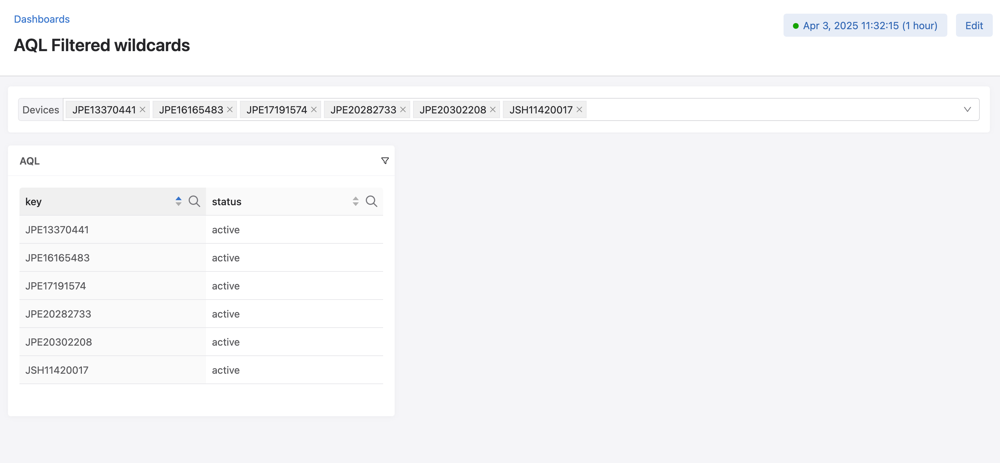
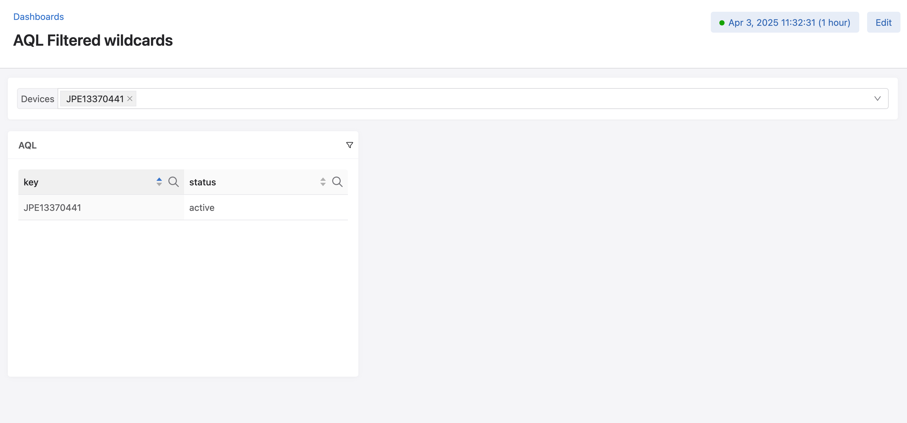

Quick overview
The syntax in AQL is similar to that of scripting languages. However, it is designed to be used like a query language. Its types are specifically designed to match the data structures of the CloudVision database.
In interactive mode, each statement is executed independently, and therefore each of their values is printed when run. However, when running an AQL script with multiple statements from the CloudVision dashboard or from a file, the only displayed value is the value of the script as a whole, which is the value of the last statement in the script.
Example in interactive mode:
>>> let a = 1
>>> a
1
>>> a + 2
3
Running it in one go:
let a = 1
a
a+2
This script simply returns 3.
The main features of the language are:
Queries: quickly fetch data from the CloudVision database
Filters: efficiently format and extract the appropriate data from the query results
Example:
# This first statement performs a query to get aggregate data for each interface of device SSJ123456
let hardwareAggs = `analytics:/Devices/SSJ123456/versioned-data/interfaces/data/*/aggregate/hardware/xcvr/1m`
# This statement uses filters to extract the average temperature for each interface
let temperaturePerIntf = hardwareAggs | map((_value | field("temperature") | field("avg"))[0])
# This last statement computes the average temperature across all the interfaces in the device and is the
# return value of the script
mean(temperaturePerIntf)
Basic statements
Statements are separated by new lines.
Comments start with a # so anything following # is not part of a statement.
>>> 1 + 2
3
>>> 1 * (2+1) / (2*5)
0.3
Values can be assigned into a variable using the let keyword.
>>> let myVar1 = 9 % 5 # variable myVar1 contains 4
The last statement’s value is stored in the metavariable _. However, some statements like
variable assignments do not have a value, so they don’t change the value of _.
>>> _
0.3
Variables can be used in expressions.
>>> 5 * _ + 12.4 + myVar1 + -1 - 1
15.9
>>> _ + 1
16.9
Variable names must begin with a letter (lower or uppercase). The rest of the name can contain letters (lower or uppercase), digits, and underscores.
Warning
Variable names that are prefixed with an underscore are metavariables and are set by the interpreter. These cannot be reassigned (read-only) but they can be used.
More details about metavariables defined by named wildcards (<wcName>) in the Named wildcards
section of this document.
>>> let myVar_Name2 = 1
>>> myVar_Name2
1
>>> let someData = `<d>:/Devices/some/data/path`
>>> _d
JPE123456
>>> let _metavar = 12
error: input:1:1: illegal variable name: _metavar
Types
num
The num type is a float64 and is the only numerical type. AQL does not have a native integer type.
This type can be defined through literals, either an integer or a floating-point value:
>>> let i = 12
>>> let j = 15.42
>>> i+j
27.42
bool
The bool type is a boolean and can either be true or false.
The syntax of its literal is either the true or false keyword.
>>> let b = true
>>> b && false
false
str
The str type is a string of characters.
The syntax of its literal is any string of character surrounded with double-quotes. To insert a double-quote
within the literal, it can be prefixed with a backslash \.
All types can be cast to str.
>>> "Don't \"panic\"!"
Don't "panic"!
>>> str(12.0) # this is a cast from num to str
12
>>> str(12.1)
12.1
Since revision 5, it is possible to declare strings with single-quotes. String literals
with single-quotes have to follow this format: 'str:<text>' and can be used to declare strings
containing double-quote characters " without prefixing them with a backslash \.
Example:
>>> "Be \"happy\"!"
Be "happy"!
>>> 'str:Be "happy"!'
Be "happy"!
time
The time type holds a timestamp. It is the key type in the timeseries type returned by queries.
There are no literals for time, but it can be cast from a str following the syntax described in RFC 3339.
>>> let t = time("2006-01-02T15:04:05+07:00")
>>> t
2006-01-02 15:04:05 +0700 +0700
>>> t + 15s
2006-01-02 15:04:20 +0700 +0700
duration
The duration type defines a time interval. It can be used to define a time range of data to get
in queries, and it can be added to or subtracted from time values.
The syntax of its literal is a signed (or not) sequence of decimal numbers followed by a unit suffix.
It can also be composed of multiple values in different time units: 300ms, -1.5h, 2h45m.
Valid time units are:
ns(nanosecond)us(microsecond)ms(millisecond)s(second)m(minute)h(hour)
>>> 5h30ms
5h0m0.03s
>>> 7 * 24h # week
168h0m0s
>>> time("2006-01-02T15:04:05+07:00") + 5h15s
2006-01-02 15:04:20 +0700 +0700
type
The type type holds type information. Any value can be cast to type to know its type.
The syntax of its literal is any type name without any quotes or delimiter.
>>> let a = 2
>>> type(a) # This is a cast to type `type`
num
>>> type("Hello World!")
str
>>> type(str)
type
>>> type("Don't panic!") == bool
false
timeseries
The timeseries type is a list of values (of any type), indexed by timestamps (time values).
Its values can be accessed either by num index or time index. If there is no exact match for the
specified time, accessing its value will return the latest entry before that time.
Note
There are no literals for timeseries and they cannot be manually created. It can be returned by some
functions (see the documentation for Standard Library functions), and all AQL queries return a timeseries
(which can be contained in a dict, see sections about Wildcards).
>>> let a = `analytics:/Devices/JPE123456/versioned-data/interfaces/data/Ethernet50/aggregate/hardware/xcvr/1m`[5m] | field("temperature") | field("avg")
>>> a
timeseries{
start: 2021-10-26 14:32:17.167535 +0100 IST
end: 2021-10-26 14:37:17.167535 +0100 IST
2021-10-26 14:32:00 +0100 IST: 26.77301344308594
2021-10-26 14:33:00 +0100 IST: 26.78515625
2021-10-26 14:34:00 +0100 IST: 26.64152704258496
2021-10-26 14:35:00 +0100 IST: 26.68106989897461
2021-10-26 14:36:00 +0100 IST: 26.76746009308496
2021-10-26 14:37:00 +0100 IST: 26.78515625
}
>>> a[0]
26.77301344308594
>>> a[time("2021-10-26T14:34:05+01:00")]
26.64152704258496
dict
The dict type is a collection of key/value pairs (map).
Note
There are no literals for dict but an empty dict can be created using the newDict function, and
its fields can be set using the bracket operator assignments or various filters such as setFields.
>>> let d = newDict()
>>> d
dict{}
>>> d["key1"] = 1
>>> d["key2"] = 2
>>> d
dict{
key1: 1
key2: 2
}
>>> d | setFields("key2", 0, "key3", 3)
dict{
key1: 1
key2: 0
key3: 3
}
unknown
The unknown type is applied to any value that is not a standard AQL type. Some of the data in CloudVision
can be of a type that does not match any of the native AQL types. There is limited support
to extract and use these values (they can be used in dict keys and values).
Note
There are no literals but some values of that type can be created using the complexKey function. See sections Complex path elements and complexKey.
Language keywords
Here is a full list of the language keywords in AQL:
Language Operators
From lowest to highest precedence:
=(assignment)?:(ternary operations)||(logical OR)&&(logical AND)!===(equality check operators)<<=>=>(comparison operators)+-(addition/concatenation and subtraction)*/%(multiplication, division, modulo)|(pipe for filters)^(power)!(logical NOT)[](access values at a specific index/key/time in timeseries/dicts)
Comparisons
Two values of the same type can be compared.
Equality operators (== and !=) work with values of any type, even dict and timeseries (but
both values must be of the same type)
>>> true == false
false
>>> let s = "myString"
>>> "myString" == s
true
>>> 2 != 3
true
Values can also be compared using the greater and lower operators (<, <=, >, >=). Both compared
values must have the same type, either str (ASCII order), num, time (before or after), or duration.
>>> myVar1
4
>>> myVar1 > 4
false
>>> myVar1 >= 4
true
myVar1 == 4
true
>>> let myBooleanVar = myVar1 + 1 <= 5
>>> myBooleanVar
true
>>> "ab" < "ac"
true
Operations
Boolean operations
Boolean values can be used with ! (NOT), && (AND), and || (OR) for boolean logic
>>> myBooleanVar
true
>>> myBooleanVar && 1 > 2
false
>>> !(myBooleanVar && 1 > 2) && !_ || 1 > 2
true
String concatenations
Strings can be concatenated with the + operator.
>>> "Hello " + "world" + "!"
Hello world!
Additions and Subtractions
Additions (+) and subtractions (-) can be performed with the following type combinations:
num + num: returns a numnum - num: returns a numtime - time: returns a durationtime + duration: returns a timetime - duration: returns a time
>>> 2+3.4
5.4
>>> let n = now() # now() returns the current time as a `time` value
>>> n
2021-10-26 15:19:56.184361 +0100
>>> let n2 = n - 15m
>>> n2
2021-10-26 15:04:56.184361 +0100
>>> n - n2
15m0s
>>> n2 + 15*60s == n
true
Multiplications and Divisions
Multiplications (*) and divisions (/) can be performed with the following type combinations:
num * num: returns a numnum / num: returns a numnum * duration: returns a durationduration / num: returns a duration
>>> 3*3
9
>>> 4.4/4
1.1
>>> 3*60s
3m0s
>>> 3m/180
1s
Modulo
The modulo (%) operator returns the remainder of a division. It can only be used with two num values.
>>> 10 % 3
1
Power
The power (^) operator returns a to the power of b. It can only be used with two num values.
>>> 3^3
27
Typecasts
It is possible to cast values of a certain type to another using the syntax typename(valueToCast).
Here is a typecast table defining which types can be cast to which other types.
FROM / TO |
num |
bool |
str |
time |
duration |
type |
timeseries |
dict |
unknown |
|---|---|---|---|---|---|---|---|---|---|
num |
YES |
YES |
YES |
YES |
YES |
YES |
NO |
NO |
NO |
bool |
YES |
YES |
YES |
NO |
NO |
YES |
NO |
NO |
NO |
str |
YES |
YES |
YES |
YES |
YES |
YES |
NO |
NO |
NO |
time |
YES |
YES |
YES |
YES |
NO |
YES |
NO |
NO |
NO |
duration |
YES |
NO |
YES |
NO |
YES |
YES |
NO |
NO |
NO |
type |
NO |
NO |
YES |
NO |
NO |
YES |
NO |
NO |
NO |
timeseries |
NO |
NO |
YES |
NO |
NO |
YES |
YES |
NO |
NO |
dict |
NO |
NO |
YES |
NO |
NO |
YES |
NO |
YES |
NO |
unknown |
NO |
NO |
YES |
NO |
NO |
YES |
NO |
NO |
NO |
Note
>>> num("12")
12
>>> str(11+1) + "a"
12a
>>> type("42")
str
>>> type(type("42"))
type
As described in the section about type type, type names can be used as type literals to perform type-assertions.
>>> type(false) == str
false
>>> type(false) == bool
true
JSON support
Added in revision 5
Variables can be declared with JSON syntax. JSON literals have to follow the format:
'json:<text>' where <text> must be valid JSON. If the key or value in JSON
is a string containing a single-quote character (') it must be prefixed with a backslash \.
>>> 'json:1'
1 # AQL type is unknown (int)
>>> 'json:1.2'
1.2 # AQL type is num
>>> 'json:{"key1": 1, "key2": true}'
dict{
key1: 1
key2: true
}
>>> 'json:[1, 2, true]'
[1,2,true] # AQL type is unknown (list)
Like any string, JSON literals can be defined using multiple lines:
let myDict = 'json:{
"key1": "value1",
"key2": 2
}'
Variable substitution
It is possible to insert variables into JSON literals. Variables can be included using this syntax:
"$<variable name>". It is possible to insert variables both in keys and values.
>>> let v = 'json:{"key1": 1, "key2": true}'
>>> 'json:{"idx": 1, "val": "$v"}' # value substitution
dict{
idx: 1
val: dict{
key1: 1
key2: true
}
}
>>> let name="title1"
>>> 'json:{"$name": 15}' # key substitution
dict{title1: 15}
Queries
AQL can fetch data from the CloudVision database by using queries. The general syntax is the following:
# no range parameter (only current state is queried)
`datasetType/datasetName:/path/to/data`
# ranged query
`datasetType/datasetName:/path/to/data`[queryParameter]
Since AQL revision 5, it is also possible to select which fields to query by adding a list of fields surrounded by square brackets between the path part and the parameters part:
`datasetType/datasetName:/path/to/data`{"field1", "field2"}
`datasetType/datasetName:/path/to/data`{"field1", "field2"}[queryParameter]
Dataset
The dataset section of the query is split into two parts with a forward slash (/). The first part
is the dataset type (e.g. device, app, config…).
The second part is the dataset name.
Example:
`user/johndoe:/path/to/data`[queryParameter]
If unspecified, the dataset type will default to device:
`JPE123456:/path/to/data`[queryParameter]
Path
The path section of the query is the path to the data in the CloudVision database, and each path element is separated by a forward slash (/).
`analytics:/Devices/JPE123456/versioned-data/interfaces/data/Ethernet1/rates`[queryParameter]
A query with a fully specified path like the above will always return a timeseries.
The value associated with each specific time in the timeseries is a dict containing all the key-value pairs updated at that path, at that specific time.
Wildcards
If a path element or the dataset name (dataset type can not be wildcarded) is replaced with a simple
star sign (*), called a wildcard, the query fetches the data at all the paths matching this wildcarded path.
Example: In the previous section, the query was fetching the interface rates for device “JPE123456”, and interface “Ethernet1”. This example gets the interface rates for all interfaces of device “JPE123456”.
`analytics:/Devices/JPE123456/versioned-data/interfaces/data/*/rates`[queryParameter]
Queries containing a wildcard do not return a timeseries, but a dict. Its keys are the path
element values matching the wildcard (in the example above, the interface names). The dict values
are the timeseries that would have been returned if querying the same path with the wildcard
replaced with each possible key.
>>> `analytics:/Devices/JPE123456/versioned-data/interfaces/data/Ethernet1/rates`[0]
timeseries{
start: 2021-10-26 16:12:46.870252166 +0100 IST
end: 2021-10-26 16:12:47.674314 +0100 IST
2021-10-26 16:12:46.870252166 +0100 IST: dict{
inMulticastPkts: 0.5000081856910986
inOctets: 61.50100684000513
outMulticastPkts: 0
outOctets: 0
}
}
>>> `analytics:/Devices/JPE123456/versioned-data/interfaces/data/*/rates`[0]
dict{
Ethernet1: timeseries{
start: 2021-10-26 16:13:16.870363498 +0100 IST
end: 2021-10-26 16:13:34.615865 +0100 IST
2021-10-26 16:13:16.870363498 +0100 IST: dict{
outMulticastPkts: 0
outOctets: 0
}
2021-10-26 16:13:26.870256382 +0100 IST: dict{
inMulticastPkts: 0.5000009149562546
inOctets: 61.50011253961932
}
}
Ethernet2: timeseries{
start: 2021-10-26 16:13:26.870256382 +0100 IST
end: 2021-10-26 16:13:34.615865 +0100 IST
2021-10-26 16:13:26.870256382 +0100 IST: dict{
inMulticastPkts: 0.10000018299125094
inOctets: 38.50007045163161
inUcastPkts: 0.20000036598250187
outMulticastPkts: 0.10000018299125094
outOctets: 12.80002342288012
}
}
A query can also contain multiple wildcards, which will result in several levels of nested dicts, with timeseries at the bottom level.
This example fetches the same data as before, but for all interfaces of all devices, using two wildcards:
>>> `analytics:/Devices/*/versioned-data/interfaces/data/*/rates`[0]
dict{
JPE123456: dict{
Ethernet1: timeseries{
start: 2021-10-26 16:13:16.870363498 +0100 IST
end: 2021-10-26 16:13:34.615865 +0100 IST
2021-10-26 16:13:16.870363498 +0100 IST: dict{
outMulticastPkts: 0
outOctets: 0
}
2021-10-26 16:13:26.870256382 +0100 IST: dict{
inMulticastPkts: 0.5000009149562546
inOctets: 61.50011253961932
}
}
Ethernet2: timeseries{
start: 2021-10-26 16:13:26.870256382 +0100 IST
end: 2021-10-26 16:13:34.615865 +0100 IST
2021-10-26 16:13:26.870256382 +0100 IST: dict{
inMulticastPkts: 0.10000018299125094
inOctets: 38.50007045163161
inUcastPkts: 0.20000036598250187
outMulticastPkts: 0.10000018299125094
outOctets: 12.80002342288012
}
}
}
JPE654321: dict{
Ethernet1: timeseries{
start: 2021-10-26 16:13:16.870363498 +0100 IST
end: 2021-10-26 16:13:34.615865 +0100 IST
2021-10-26 16:13:16.870363498 +0100 IST: dict{
outMulticastPkts: 0
outOctets: 0
}
2021-10-26 16:13:26.870256382 +0100 IST: dict{
inMulticastPkts: 0.50000037628384
inOctets: 67.638619033792
}
}
Ethernet2: timeseries{
start: 2021-10-26 16:13:26.870256382 +0100 IST
end: 2021-10-26 16:13:34.615865 +0100 IST
2021-10-26 16:13:26.870256382 +0100 IST: dict{
inMulticastPkts: 0.10000027274982
inOctets: 33.478329283748833
inUcastPkts: 0.20000036598250187
outMulticastPkts: 0.100000432767384
outOctets: 12.828728378483
}
}
}
For a dataset wildcard, the result is built with the same structure. The syntax is as follows:
`user/*:/some/path`[queryParameter] # This will get data for all `user` datasets
`*:/some/path`[queryParameter] # This will get data for all `device` datasets
Filtered wildcards
Added in revision 5
A query with wildcards fetches the data at all the paths matching the wildcarded path.
It is possible to restrict query results to a subset of the matching paths by replacing the wildcard
(*) with the following syntax:
*filteredWildcardName or *_filteredWildcardName, where filteredWildcardName is the name
of an input variable which holds a list of values. The query will fetch only the paths for which
the wildcarded path element is part of that list.
For each filtered wildcard, the query will exit with an error if the associated input variable is missing.
It is possible to modify this behaviour and make a filtered wildcard behave like a regular wildcard when its
variable is not defined by adding a question mark (?) at the end of the variable’s name.
Example:
Regular wildcard:
let data = `analytics:/Devices/*/versioned-data/interfaces/data/*/rates`[1m]
data # This contains the data for all datasets (type = dict of timeseries)
Filtered wildcard:
let data = `analytics:/Devices/*_devices/versioned-data/interfaces/data/*/rates`[1m]
data # This contains only the data for defined datasets (type = dict of timeseries)
If the _devices variable is defined as an array of devices names: {"_devices": ["JPE1234567", "JPE7654321"]},
the result will contain only data for devices JPE1234567 and JPE7654321.
Variables can be defined as either a list (complex key, type unknown) or a dict with the selected path elements as keys. The following two examples are equivalent:
{"_devices": ["JPE1234567", "JPE7654321"]}{"_devices": {"JPE1234567":0, "JPE7654321":0}
Variables used for filtered wildcards can only be input variables (defined outside of the scope of the AQL script), using an input panel on CloudVision Dashboards, or a CLI argument using the AQL interpreter from the CLI.
For more information about how to define filtered values, please refer to section Manual user input.
Note
Filtered wildcards reduce the amount of requested data and therefore make queries cheaper and faster.
Example:
let data = `analytics:/Devices/*_Devices/versioned-data/aggregate/rates/1h/stats`{"inOctets", "outOctets"}
data | map(merge(_value)["inOctets"]["max"] != 0 || merge(_value)["outOctets"]["max"] != 0 ? 'json:{"status":"active"}' : 'json:{"status":"inactive"}')
This query marks devices as “enabled” if they received or sent any traffic within the past hour.
 {kind=link}
{kind=link}
Complex path elements
Most paths in the database are made of string path elements. In AQL, they are natively handled and are separated with slashes in queries. However, some paths can contain path elements of different types, some of which don’t exist in AQL. AQL, however, supports some of them using the curly brackets syntax.
Numerical value
A numerical literal can be used between the curly brackets, and will produce an int path element if the literal is an integer literal, and a float path element when it has a decimal part (nil or not).
>>> `myDataset:/foo/{12}/bar` # int path element
>>> `myDataset:/foo/{12.}/bar` # float path element
>>> `myDataset:/foo/{12.0}/bar` # float path element
>>> `myDataset:/foo/{12.35}/bar` # float path element
Boolean value
A boolean literal can be used between the curly brackets.
>>> `myDataset:/foo/{true}/bar` # bool (true) path element
>>> `myDataset:/foo/{false}/bar` # bool (false) path element
>>> `myDataset:/foo/true/bar` # string path element
>>> `myDataset:/foo/{"true"}/bar` # string path element (identical to the previous one)
String value
A string literal can be used between the curly brackets. This is mostly useful for path elements that contain a slash
>>> `myDataset:/foo/{"my string value"}/bar` # string path element
>>> `myDataset:/foo/{"my/string/with/slashes"}/bar` # string path element containing slashes
>>> `myDataset:/foo/my\/string\/with\/slashes/bar` # identical to the previous one
Map value
A map can be input using the JSON syntax (curly brackets and comma-separated colon-linked pairs).
Can contain nested lists and maps.
>>> `myDataset:/foo/{"key": 1.0}/bar` # map("key": float(1)) path element
>>> `myDataset:/foo/{"key": 1}/bar` # map("key": int(1)) path element
>>> `myDataset:/foo/{"key": 1.1}/bar` # map("key": float(1.1)) path element
>>> `myDataset:/foo/{"key": "val", "keyb": true}/bar` # map("key": str("val"), "keyb": bool(true))
List value
A list can be input using the JSON syntax (square brackets and comma-separated values). JSON does not know the difference between floats and ints, so a numerical value with a nil decimal part will be interpreted as an int, and one with a non-nil decimal part will be interpreted as a float. Can contain nested lists and maps
>>> `myDataset:/foo/[1.0, 1, 1.1]/bar` # list(int(1), int(1), float(1.1)) path element
>>> `myDataset:/foo/[true, "str", {"subkey": "subval"}, [1]]/bar` # list(bool(true), str("str"), map("subkey": str("subval")), list([int(1)]))
Fields
Added in revision 5
The fields section of the query is the list of keys that should be queried at the specified path. It is optional, and placed after the closing backtick of the dataset and path part of the query, and before the range parameter.
Like every other components of the query, the keys must be statically defined, which means they have to be either literals or input variables. They cannot use locally defined variables because queries are executed before the evaluation of the AQL code.
Note
Selecting the fields can make the query faster and cheaper. It is optional but strongly recommended when only a part of the data at the requested path is needed.
>>> `analytics:/Devices/JPE123456/versioned-data/counts/operStatus`
timeseries{
start: 2023-02-03 01:44:20.325212627 +0000 GMT
end: 2024-10-22 17:10:48.032887000 +0100 IST
2023-02-03 01:44:20.325212627 +0000 GMT: dict{
intfOperDormant: 0
intfOperLowerLayerDown: 0
intfOperTesting: 0
intfOperUnknown: 0
}
2024-05-31 23:08:25.618306414 +0100 IST: dict{intfOperNotPresent: 26}
2024-09-13 20:48:16.681354596 +0100 IST: dict{
intfOperDown: 45
intfOperUp: 2
}
}
>>> `analytics:/Devices/JPE123456/versioned-data/counts/operStatus`{"intfOperDormant"}
timeseries{
start: 2023-02-03 01:44:20.325212627 +0000 GMT
end: 2024-10-22 17:12:58.284038000 +0100 IST
2023-02-03 01:44:20.325212627 +0000 GMT: dict{intfOperDormant: 0}
}
>>> `analytics:/Devices/JPE123456/versioned-data/counts/operStatus`{"intfOperDormant", "intfOperUp"}
timeseries{
start: 2023-02-03 01:44:20.325212627 +0000 GMT
end: 2024-10-22 17:14:00.495112000 +0100 IST
2023-02-03 01:44:20.325212627 +0000 GMT: dict{intfOperDormant: 0}
2024-09-13 20:48:16.681354596 +0100 IST: dict{intfOperUp: 2}
}
>>> `JPE123456:/Sysdb/environment/archer/power/status/powerSupply/*`{"name", "outputCurrentSensorName", "inputPower"}
dict{
PowerSupply1: timeseries{
start: 2024-10-22 03:55:32.374691383 +0100 IST
end: 2024-10-22 17:31:36.497902000 +0100 IST
2024-10-22 03:55:32.374691383 +0100 IST: dict{
inputPower: dict{value: 158}
name: PowerSupply1
outputCurrentSensorName: CurrentSensorP1/2
}
}
PowerSupply2: timeseries{
start: 2024-10-22 03:55:33.299529483 +0100 IST
end: 2024-10-22 17:31:36.497902000 +0100 IST
2024-10-22 03:55:33.299529483 +0100 IST: dict{
inputPower: dict{value: 153}
name: PowerSupply2
outputCurrentSensorName: CurrentSensorP2/2
}
}
}
>>> `JPE123456:/Sysdb/environment/archer/power/status/powerSupply/*`{"inputPower"}[5]
dict{
PowerSupply1: timeseries{
start: 2024-10-18 12:42:39.861044576 +0100 IST
end: 2024-10-22 17:32:04.895275000 +0100 IST
2024-10-18 12:42:39.861044576 +0100 IST: dict{inputPower: dict{value: 159.25}}
2024-10-18 13:45:18.838676763 +0100 IST: dict{inputPower: dict{value: 161.25}}
2024-10-21 03:01:37.514025317 +0100 IST: dict{inputPower: dict{value: 158.5}}
2024-10-21 06:43:41.769409904 +0100 IST: dict{inputPower: dict{value: 160.75}}
2024-10-22 03:07:27.974992986 +0100 IST: dict{inputPower: dict{value: 154}}
2024-10-22 03:55:32.374691383 +0100 IST: dict{inputPower: dict{value: 158}}
}
PowerSupply2: timeseries{
start: 2024-10-18 12:42:39.401834480 +0100 IST
end: 2024-10-22 17:32:04.895275000 +0100 IST
2024-10-18 12:42:39.401834480 +0100 IST: dict{inputPower: dict{value: 149}}
2024-10-18 13:45:18.834509980 +0100 IST: dict{inputPower: dict{value: 151.5}}
2024-10-21 03:01:37.510128194 +0100 IST: dict{inputPower: dict{value: 151.75}}
2024-10-21 06:43:41.765597171 +0100 IST: dict{inputPower: dict{value: 153.5}}
2024-10-22 03:07:27.971122700 +0100 IST: dict{inputPower: dict{value: 153.25}}
2024-10-22 03:55:33.299529483 +0100 IST: dict{inputPower: dict{value: 153}}
}
}
Range parameter
The query parameter is specified within the square brackets attached to the query. It determines the amount (time range or number of updates) of data to fetch.
The parameter must be written as a num or duration literal. It cannot use the value of a variable.
No parameter
If the parameter is not specified, it is equivalent to specifying 0 within the brackets. In that case,
the query will only return the state of data at the current time.
This timeseries can contain multiple updates if the keys at this path were last update at different times.
In the example below, keys were last updated in 3 different updates, so the timeseries contains 3 updates.
>>> `analytics:/Devices/JPE12345/path/to/some/interface/data`
timeseries {
start: 2021-10-26 16:13:26 +0100
end: 2021-10-26 16:13:34 +0100
2021-10-26 16:13:26 +0100 IST: dict{
key4: 5
key5: 6
}
2021-10-26 16:13:29 +0100 IST: dict{
key3: 2
}
2021-10-26 16:13:34 +0100 IST: dict{
key1: 2
key2: 1
}
}
Note: Merging the result
When getting only the current state (not specifying any parameter), it is common practice to use the merge function, which will turn a timeseries of dicts into a simple dict, containing the latest value for each possible key. This allows for direct manipulation of data.
>>> merge(`analytics:/Devices/JPE12345/path/to/some/interface/data`)
dict{
key1: 2
key2: 1
key3: 2
key4: 5
key5: 6
}
Warning
Do not confuse the query parameter with the bracket operator that accesses a specific update in an existing timeseries.
In the following example, the first bracket expression is the query parameter, and the second is the index of the value to get in the resulting timeseries.
>>> `analytics:/Devices/JPE12345/path/to/some/interface/data`[0][0]
dict{
key4: 5
key5: 6
}
If you want to use the “index-access” bracket operator and not specify a query parameter, you must either explicitly define the query parameter before, or surround the query with parentheses.
>>> `analytics:/Devices/JPE12345/path/to/some/interface/data`[0]
timeseries {
start: 2021-10-26 16:13:26 +0100
end: 2021-10-26 16:13:34 +0100
2021-10-26 16:13:26 +0100 IST: dict{
key4: 5
key5: 6
}
2021-10-26 16:13:29 +0100 IST: dict{
key3: 2
}
2021-10-26 16:13:34 +0100 IST: dict{
key1: 2
key2: 1
}
}
>>> `analytics:/Devices/JPE12345/path/to/some/interface/data`["key4"]
error: input:1:1: bracket selector of query can only get a num or duration, got str
>>> (`analytics:/Devices/JPE12345/path/to/some/interface/data`)["key4"]
error: input:1:16: operator [] applied to timeseries needs a value of type num or time
>>> (`analytics:/Devices/JPE12345/path/to/some/interface/data`)[0]
dict{
key4: 5
key5: 6
}
>>> (`analytics:/Devices/JPE12345/path/to/some/interface/data`)[0]["key4"]
5
>>> merge(`analytics:/Devices/JPE12345/path/to/some/interface/data`)["key4"]
5
Number of updates
If the square brackets contain a num literal, this num defines what number n of updates to get.
The query will fetch the n latest updates at this path, with each update corresponding to an entry
in the resulting timeseries. However, the length of the timeseries can be superior to n, because
the query also gets the “state” of data before the n updates, i.e. the last update for each key at this
path before the n updates.
In the example below, the query requests 3 updates. However, the timeseries returned has a length of 5.
This is because the oldest update of the 3 only updates the value of keys key4 and key5, but not key1,
key2, and key3. Therefore the query also returns the latest update before it for each of these keys.
Here, there are two of these “state” updates: one updates both key1 and key2, and the other updates key3.
>>> `analytics:/Devices/JPE12345/path/to/some/interface/data`[3]
timeseries {
start: 2021-10-26 16:13:16 +0100
end: 2021-10-26 16:13:34 +0100
2021-10-26 16:13:16 +0100 IST: dict{
key1: 1
key2: 2
}
2021-10-26 16:13:23 +0100 IST: dict{
key3: 1
}
2021-10-26 16:13:26 +0100 IST: dict{
key4: 5
key5: 6
}
2021-10-26 16:13:29 +0100 IST: dict{
key1: 2
key3: 1
}
2021-10-26 16:13:34 +0100 IST: dict{
key1: 2
key2: 1
}
}
If the oldest of the 3 updates had updated all the keys stored at this path, there would not have been any “state” update and the length of the timeseries would have been 3:
>>> `analytics:/Devices/JPE12345/path/to/some/interface/data`[3]
timeseries {
start: 2021-10-26 16:13:26 +0100
end: 2021-10-26 16:13:34 +0100
2021-10-26 16:13:26 +0100 IST: dict{
key1: 5
key2: 4
key3: 3
key4: 2
key5: 1
}
2021-10-26 16:13:29 +0100 IST: dict{
key1: 2
key3: 1
}
2021-10-26 16:13:34 +0100 IST: dict{
key1: 2
key2: 1
}
}
Duration
If the square brackets contain a duration literal, this specifies the time range of data returned by the query.
The query will return all the updates that happened at this path during the last d duration, along
with the “state” updates, following the same rules as the number of updates.
In the example below, the query fetches the latest 8 seconds of data. In this interval, three updates
happened, the oldest of which only updated key4 and key5, so the returned timeseries also contains
two older updates, which are the latest updates for key1, key2 and key3 before now() - 8s.
>>> `analytics:/Devices/JPE12345/path/to/some/interface/data`[8s]
timeseries {
start: 2021-10-26 16:13:16 +0100
end: 2021-10-26 16:13:34 +0100
2021-10-26 16:13:16 +0100 IST: dict{
key1: 1
key2: 2
}
2021-10-26 16:13:23 +0100 IST: dict{
key3: 1
}
2021-10-26 16:13:26 +0100 IST: dict{
key4: 5
key5: 6
}
2021-10-26 16:13:29 +0100 IST: dict{
key1: 2
key3: 1
}
2021-10-26 16:13:34 +0100 IST: dict{
key1: 2
key2: 1
}
}
Fixed timestamps range
It is also possible to use two timestamps separated with a colon (:). This syntax allows querying
data that was written between these timestamps, along with the state data from before the first
timestamp.
Like for every query parameter, it is not possible to use a regular variable as one of the timestamps. They have to be defined directly within the square brackets, or use an input metavariable (defined outside of the AQL script scope).
>>> `analytics:/path/to/data`[time("2022-01-26T16:00:00+00:00"):time("2022-01-26T16:01:00+00:00")]
timeseries {
start: 2022-01-26 16:00:00 +0000 GMT
end: 2022-01-26 16:01:00 +0000 GMT
2021-10-26 15:59:30 +0100 IST: dict{
key1: 1
}
2021-10-26 16:00:00 +0100 IST: dict{
key1: 2
}
2021-10-26 16:00:30 +0100 IST: dict{
key1: 3
}
2021-10-26 16:01:00 +0100 IST: dict{
key1: 4
}
}
Example with input variables:
>>> `analytics:/path/to/data`[_startTime:_endTime]
timeseries {
start: 2022-01-26 16:00:00 +0000 GMT
end: 2022-01-26 16:01:00 +0000 GMT
2021-10-26 15:59:30 +0100 IST: dict{
key1: 1
}
2021-10-26 16:00:00 +0100 IST: dict{
key1: 2
}
2021-10-26 16:00:30 +0100 IST: dict{
key1: 3
}
2021-10-26 16:01:00 +0100 IST: dict{
key1: 4
}
}
Square bracket operator
When applied to a collection (dict or timeseries), the square bracket operator allows access to a specific value of that collection.
Timeseries
For a timeseries, the type specified within the square brackets can be either a num for access to a specific numerical index (starts at 0) in the timeseries, or a time, for access to a the value at a specific time (if there is no exact match, it will return the latest value before the specied time).
When accessing a timeseries value using the square bracket operator, the interpreter sets the metavariables
_bracketTime and _bracketIndex to the exact time and index associated with that value.
The num index can be negative, in which case it starts from the end of the timeseries (index -1 is the
last update)
>>> myTimeseries
timeseries {
start: 2021-10-26 16:13:16 +0100
end: 2021-10-26 16:13:34 +0100
2021-10-26 16:13:16 +0100 IST: "val1"
2021-10-26 16:13:23 +0100 IST: "val2"
2021-10-26 16:13:26 +0100 IST: "val3"
2021-10-26 16:13:29 +0100 IST: "val4"
2021-10-26 16:13:34 +0100 IST: "val5"
}
>>> myTimeseries[time("2021-10-26T16:13:25+01:00")]
val2
>>> _bracketTime
2021-10-26 16:13:23 +0100 IST
>>> _bracketIndex
1
>>> myTimeseries[-2]
val4
>>> _bracketTime
2021-10-26 16:13:29 +0100 IST
>>> _bracketIndex
3
Dict
The square bracket operator allows access to the value associated with a specific key in a dict. The key can be of any valid key type:
>>> let d = newDict() | setFields("key", 1, 2, 3, complexKey("{\"k\": \"v\"}"), 4)
>>> d
dict{
2: 3
key: 1
{"k":"v"}: 4
}
>>> d[2]
3
>>> d["key"]
1
>>> d[complexKey("{\"k\": \"v\"}")]
4
This operator also allows for setting values in the dict.
>>> let d = newDict()
>>> d["key"] = "value"
>>> d
dict{key: value}
Complex Keys
Since revision 5, the square bracket operator allows accessing inner values in complex keys.
>>> let a = 'json:[1,2,3]'
>>> a
[1,2,3]
>>> a[0]
1
If/Else
AQL also supports if / else conditions. The syntax is as follows:
if condition {
# statements
} else {
# statements
}
It is possible to write only the if block and not the else.
if condition {
# statements
}
Variables in AQL are not scoped. This means that variables defined within the scope of the if / else
can be accessed from outside.
>>> a
error: input:1:1: undeclared variable: a
>>> if 5 > 3 {
... let a = 1
... }
>>> a
1
The metavariable _ is set even by statements within the scope of an if / else.
>>> let a = 6 * 7
>>> if a == 42 || a == 6 * 9 {
... "a is the answer"
... } else {
... "a is not the answer"
... }
>>> _
a is the answer
However, the if / else statement itself does not have a return value, like a variable assignment.
Therefore, this script will not return "a is not the answer" but will have no return value:
let a = 5
if a == 42 || a == 6 * 9 {
"a is the answer"
} else {
"a is not the answer"
}
To return this value at the end of the script, it is possible to just add a statement that simply
returns the _ value. In that case, the script will return "a is not the answer":
let a = 5
if a == 42 || a == 6 * 9 {
"a is the answer"
} else {
"a is not the answer"
}
_
Ternary expressions
Ternary expressions allow to use conditions directly within an expression. The syntax is similar to that of the C language.
condition ? valueIfConditionIsTrue : valueIfConditionIsFalse
This can be used in any context that manipulates a value.
>>> let a = 2
>>> let b = a < 3 ? "a lower than 3" : "a greater than 3"
>>> b
a lower than 3
Ternary expressions can be nested.
>>> let a = 2
>>> let b = a > 0 ? a > 5 ? "big" : "small" : "negative"
>>> b
small
Ternary expressions are mostly used within programmatic filters such as map (see section Filters),
because these filters only allow pure expressions, and statements such as if / else or variable
declarations statements cannot be used in their scope.
>>> let data = `analytics:/some/data/path`[16s] | field("avg")
>>> let threshold = 10
>>> data | map(_value <= threshold ? _value : "forbidden")
timeseries {
start: 2021-10-26 16:13:16 +0100
end: 2021-10-26 16:13:34 +0100
2021-10-26 16:13:16 +0100 IST: 5
2021-10-26 16:13:23 +0100 IST: forbidden
2021-10-26 16:13:26 +0100 IST: 3
2021-10-26 16:13:29 +0100 IST: 10
2021-10-26 16:13:34 +0100 IST: forbidden
}
Loops
AQL supports two kinds of loops: for and while.
For loop
The for loop iterates over an existing collection (dict or timeseries). Since revision 5, for loops can also be used with complex keys (type unknown) of type list or map. The syntax is as follows:
for k, v in collection {
# statements
}
In the example above, k takes the current key (or timestamp if the collection is a timeseries),
and v its associated value at each iteration. k and v are not predefined names and can be named
any valid variable name by the user:
>>> let myDict = newDict() | setFields("k1", 1, "k2", 2)
>>> let s = ""
>>> for myKey, myValue in myDict {
... let s = s + "{" + str(myKey) + ": " + str(myValue) + "}"
... }
>>> s
{k1: 1}{k2: 2}
It is possible to specify only one variable instead of both key and value. In this case, the variable will only take the value at each iteration, and the timestamp/key will not be used.
>>> let myDict = newDict() | setFields("k1", 1, "k2", 2)
>>> let i = 0
>>> for val in myDict {
... let i = i + val
... }
>>> i
3
While loop
While loops will iterate as long as the specified condition is true. The syntax is as follows:
while condition {
# statements
}
Here is an example that computes the factorial of 6.
>>> let fact6 = 1
>>> let a = 1
>>> while a <= 6 {
... let fact6 = fact6 * a
... let a = a + 1
... }
>>> fact6
720
Functions
The Standard Library of AQL offers a wide range of functions. Each of them is documented in the Standard Library page.
However, it is not possible to define new functions in AQL.
The syntax to call a standard library function is as follows:
functionName(argument1)
functionName(argument1, argument2)
The number of arguments varies depending on the function.
Some examples:
>>> let data = `analytics:/some/data/path`[10s]
>>> length(data) # length returns the length of a dict or timeseries
5
>>> let avgData = data | field("avg")
>>> avgData
timeseries {
start: 2021-10-26 16:13:25 +0100
end: 2021-10-26 16:13:34 +0100
2021-10-26 16:13:25 +0100 IST: 5
2021-10-26 16:13:27 +0100 IST: 2
2021-10-26 16:13:29 +0100 IST: 3
2021-10-26 16:13:31 +0100 IST: 10
2021-10-26 16:13:33 +0100 IST: 1
}
>>> mean(avgData)
4.2
Filters
Filters are one of the most powerful features in AQL. They allow filtering, formatting, and refining of data returned by queries very easily and much more efficiently than with loops and manual data manipulation.
The AQL Standard Library offers a wide range of filters, designed to adapt to the data structures of the CloudVision database. Each of them is documented in the Standard Library page.
Filters can only be applied to a collection (dict or timeseries), and do not alter the data in the filtered collection. They return a new collection of the same type, with its content filtered or altered.
The syntax is as follows:
collection | filterName(argument1, argument2)
The number of arguments varies depending on the filter, and filters can be chained. Some filters, like fields or setFields for example, take a variable number of arguments.
collection | filter1(argument1) | filter2(argument1, argument2) | filter3(argument1)
Some filters, such as map or where take expressions as arguments, and set metavariables that can be used in these expressions to manipulate the content of the collection. Here are some examples with a dict but these filters work with timeseries as well. For more examples with either type of collection, see the detailed documentation for each filter.
>>> let d = newDict() | setFields("k1", 1, "k2", 2, "k3", 3)
>>> d
dict{
k1: 1
k2: 2
k3: 3
}
>>> d | map(_value * 10)
dict{
k1: 10
k2: 20
k3: 30
}
>>> d
dict{
k1: 1
k2: 2
k3: 3
}
>>> d | map(_value * 10) | where(_value <= 20)
dict{
k1: 10
k2: 20
}
>>> d | map(str(_value * 10) + _key)
dict{
k1: 10k1
k2: 20k2
k3: 30k3
}
The expression within a filter can use nested filters.
>>> let d = newDict() | setFields("d1", newDict() | setFields("k1", 1), "d2", newDict() | setFields("k1", 2))
dict{
d1: dict{
k1: 1
}
d2: dict{
k1: 2
}
}
>>> d | map(_value * 10)
error: input:1:4: input:1:15: operator * cannot be used with dict and num
>>> d | map(_value | map(_value * 10))
dict{
d1: dict{
k1: 10
}
d2: dict{
k1: 20
}
}
Directives
Directives allow setting some options before running an AQL script. They must be specified at the beginning of the script code and will be set for the entire execution.
The syntax is as follows:
%directiveName = true|false
The only directive currently allowed is includeDecommissionedDevices. It makes device dataset
wildcards include decommissioned devices’ datasets. By default, these datasets are not included.
%includeDecommissionedDevices = true
`*:/Sysdb/some/path/to/data`
Named wildcards and per-value execution
Warning
This section covers features that apply outside of the scope of a single AQL script execution. Named wildcards are a part of AQL syntax but will modify how the interpreter behaves, by making it run the script multiple times instead of one, with different input variables at each execution.
This execution can then produce multiple outputs.
Default behaviour
It is possible to insert a named wildcard into a query with the following syntax: <wildcardName>.
When a named wildcard is set in a query, the interpreter catches it before running the AQL script;
instead of running it once, it runs the script multiple times for each path element matching the named
wildcard.
In each run, the value of the path element is also set by the interpreter as a metavariable.
The name of that variable is always prefixed with an underscore, like all metavariables, but you do not
have to specify that underscore in the wildcard name. Therefore, these two syntaxes have the exact same
result, with the path element being stored in variable _device
`analytics:/Devices/<device>/interfaces/data`
`analytics:/Devices/<_device>/interfaces/data`
Example:
Regular wildcard:
let data = `*:/some/path/to/data`[1m]
data # This contains the data for all datasets (type = dict of timeseries)
Named wildcard:
let data = `<d>:/some/path/to/data`[1m]
let deviceName = _d # deviceName is a single string value, the name of the dataset in the current run
data # This contains only the data for one dataset (type = timeseries)
For the named wildcard, the AQL script runs multiple times and the interpreter returns the list of all the outputs. The user only has to manage data for one single dataset within the AQL code.
For the regular wildcard, the AQL script runs only once, and contains the data of a datasets in a dict. The user has to deal with the data of all the datasets manually.
Manual user input
Note
User defined input variables are used to control behaviour of Named wildcards as well as Filtered wildcards.
When running AQL scripts through CLI, the Service API, or directly using the AQL interpreter library, it is possible to pass input variables to manually control the multiple runs of named or filtered wildcards from outside the scope of the AQL script.
In the AQL library, this is handled through the inputVars parameter, in the Service API, through the
varsets field.
In any case, the field is a list that defines the list of times the query will be run. Each element of the list is a list or map of the variables that the interpreter will set in the environment before running the AQL script.
If these varsets contain values that match the variable name of a named/filtered wildcard, the interpreter will not perform the global GET on all defined values and instead run the query one or several times, following the runs defined in the varset.
Example with named wildcards:
With these input variable sets:
[
{"_d": "JPE123456", "_i": "Ethernet5"},
{"_d": "JPE123456", "_i": "Ethernet6"},
{"_d": "JPE654321", "_i": "Ethernet1"}
]
The following query will just run three times, twice for device JPE123456 (with interface Ethernet5
the first time and Ethernet6 the second), and once for device JPE654321, with interface Ethernet1.
let interfaceData = `<d>:/Sysdb/hardware/archer/xcvr/status/all/<i>`[10m]
let deviceAndInterfaceNames = _d + " " + _i # This is just a string containing the device and interface name
interfaceData # This is a timeseries containing the last 10 mins of data for the current intf and device
Example with filtered wildcards:
With these input variable sets:
[
{"_dv": ["JPE123456", "HSH123456"], "_int": ["Ethernet1","Ethernet5"]},
{"_dv": "JPE654321", "_int": ["Ethernet1","Ethernet3"]}
]
The following query will run two times, once for devices JPE123456 and HSH123456
(with interfaces Ethernet1``and ``Ethernet5), and once for device JPE654321
(with interfaces Ethernet1 and Ethernet3).
`*:/Sysdb/hardware/archer/xcvr/status/all/*i`[10m]
# Execution 1 (varset = {_dv: [JPE123456 HSH123456], _int: [Ethernet1 Ethernet5]}):
dict{
JPE123456: dict{
Ethernet1: timeseries{
start: 2024-11-13 17:33:40.662701881 +0100 CET
end: 2024-12-06 15:46:10.248705559 +0100 CET
2024-11-13 17:33:40.662701881 +0100 CET: dict{
presence: true
transceiverType: 1000BaseT
vendorName: Arista Networks
}
}
Ethernet5: timeseries{
start: 2024-11-13 17:33:40.662701881 +0100 CET
end: 2024-12-06 15:46:10.248705559 +0100 CET
2024-11-13 17:33:40.662701881 +0100 CET: dict{
presence: true
transceiverType: 1000BaseT
vendorName: Arista Networks
}
}
}
HSH123456: dict{
Ethernet1: timeseries{
start: 2024-11-13 18:29:05.331186322 +0100 CET
end: 2024-12-06 15:46:10.248705559 +0100 CET
2024-11-13 18:29:05.331186322 +0100 CET: dict{
presence: true
serialNumber: XMD1145MC095
transceiverType: 1000BaseT
vendorName: Arista Networks
}
}
Ethernet5: timeseries{
start: 2024-11-13 18:29:05.341094729 +0100 CET
end: 2024-12-06 15:46:10.248705559 +0100 CET
2024-11-13 18:29:05.341094729 +0100 CET: dict{
presence: true
serialNumber: XMD1239MCJAH
transceiverType: 1000BaseT
vendorName: Arista Networks
}
}
}
}
# Execution 2 (varset = {_dv: [JPE654321], _int: [Ethernet1 Ethernet3]}):
dict{
JPE654321: dict{
Ethernet1: timeseries{
start: 2024-11-13 13:19:27.069039503 +0100 CET
end: 2024-12-06 15:46:10.248705559 +0100 CET
2024-11-13 13:19:27.069039503 +0100 CET: dict{presence: false}
}
Ethernet3: timeseries{
start: 2024-11-13 13:19:27.218098594 +0100 CET
end: 2024-12-06 15:46:10.248705559 +0100 CET
2024-11-13 13:19:27.218098594 +0100 CET: dict{presence: false}
}
}}
For the following input variable sets:
[
{"_dv": ["JPE123456", "JPE654321"], "_int": ["Ethernet1", "Ethernet5","Ethernet6"]}
]
The previous query will search for all combinations of given devices and interfaces with one run.
Note
It is possible to mix filtered and named wildcards but with uniq names!